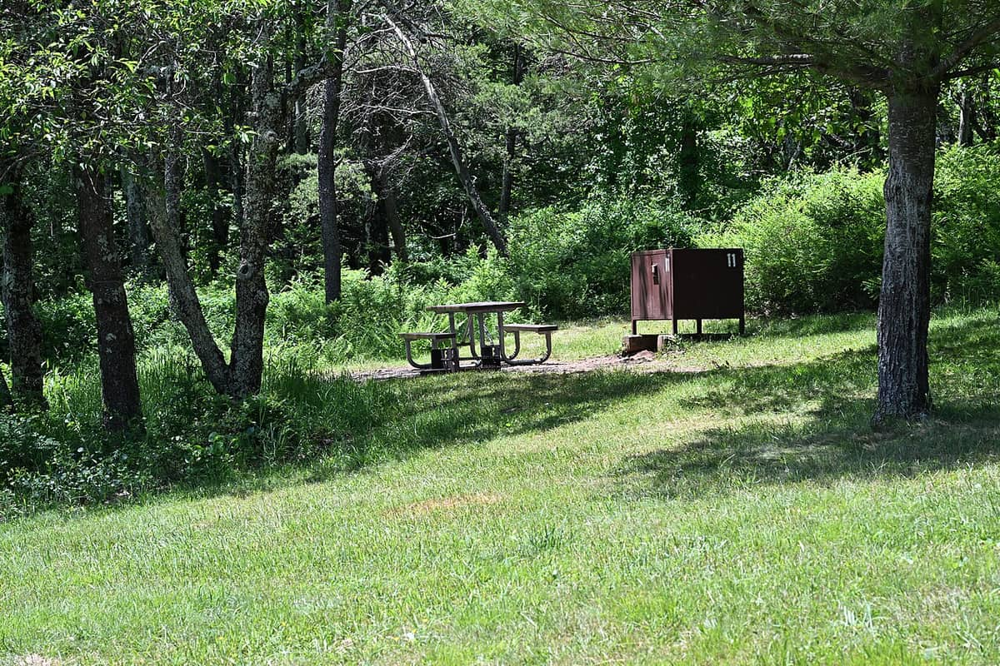
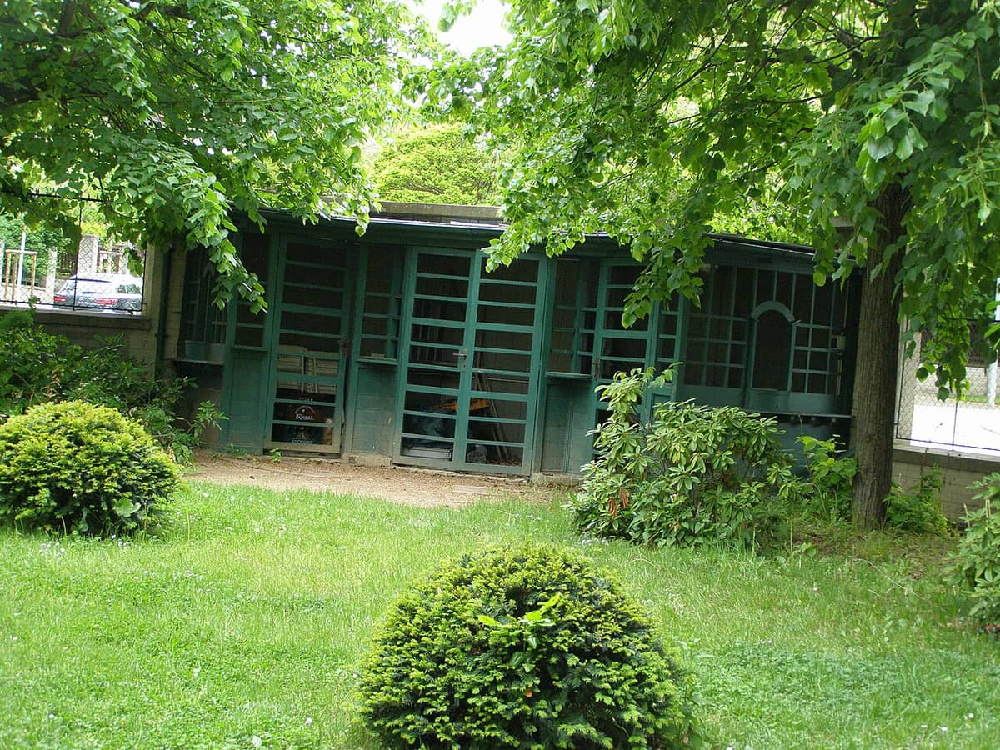
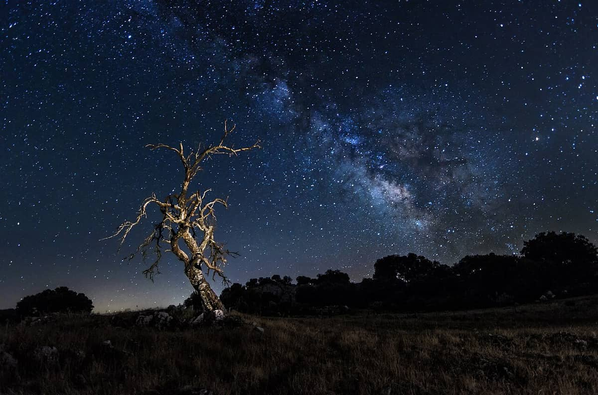

Domek, kamper czy namiot - który nocleg wybrać?
Wszystkie miejsca są na terenie winnicy, z dostępem do wody, prądu i toalety. Różnią się wygodą i ceną - cena dotyczy całego domku albo całego miejsca, nie osoby.


Domek w winnicy
Drewniany domek z tarasem i widokiem na rzędy winorośli. Dla pary albo rodziny do 4 osób - wieczorem wino w altanie, rano kawa na tarasie.
- Sypialnia z łóżkiem podwójnym
- Rozkładana sofa dla 2 osób
- Aneks kuchenny i łazienka
- Taras i miejsce na ognisko


Miejsce na kampera
Równe miejsce na trawie dla kampera albo przyczepy, przy winnicy, z dala od drogi. Prąd i woda na miejscu, toaleta na terenie.
- Podłączenie do prądu
- Napełnianie wody
- Toaleta na terenie
- Stół piknikowy i grill



Miejsce na namiot
Namiot na łące przy winnicy, z widokiem na lasy i łąki. Wieczorem ognisko i gwiazdy - bez świateł miasta.
- Miejsce na łące przy winnicy
- Toaleta i woda na terenie
- Miejsce na ognisko
- Altana ze stołem
Ile kosztuje noc w winnicy?
Najtaniej jest od niedzieli do czwartku. W piątek, sobotę i długie weekendy noc jest droższa. Cena dotyczy całego domku albo miejsca.
| Termin | Domek w winnicy | Miejsce na kampera | Miejsce na namiot |
|---|---|---|---|
| Noc od niedzieli do czwartku | 290 zł | 90 zł | 60 zł |
| Noc z piątku i z soboty, długie weekendy | 340 zł | 100 zł | 70 zł |
| Degustacja wina (dodatkowo) | 45 zł / osoba | 45 zł / osoba | 45 zł / osoba |
Ceny przykładowe - wpiszemy Państwa cennik. Kalendarz rezerwacji liczy cenę za cały pobyt według tego cennika.